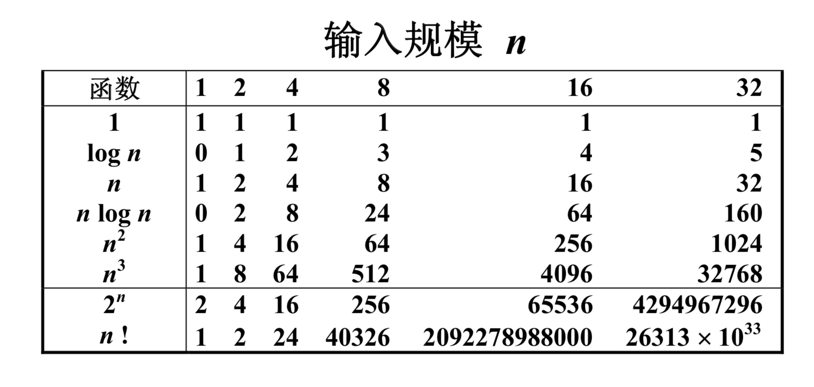
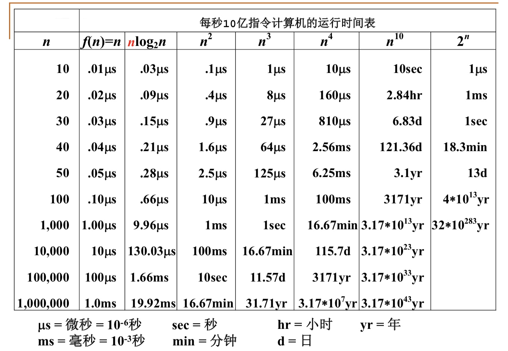

什么是好的算法?
- 空间复杂度S(n) —— 根据算法写成的程序在执行时 占用存储单元的长度。这个长度往往与输入数据的 规模有关。空间复杂度过高的算法可能导致使用的 内存超限，造成程序非正常中断。
- 时间复杂度T(n) —— 根据算法写成的程序在执行时 耗费时间的长度。这个长度往往也与输入数据的规 模有关。时间复杂度过高的低效算法可能导致我们 在有生之年都等不到运行结果。
在分析一般算法的效率时，我们经常关注下面 两种复杂度
- 最坏情况复杂度 \(T_{worst}(n)\)
- 平均复杂度 \(T_{avg}(n)\)
\(T_{avg}(n) \le T_{worst}(n)\)
复杂度的渐进表示法
- \(T(n) = O(f(n))\) 表示存在常数\(C>0, n0>0\) 使得当 \(n \ge n_0\) 时有\(T(n) \le C·f(n)\)
- \(T(n) = \Omega(g(n))\) 表示存在常数\(C>0, n0>0\) 使得当 \(n \ge n_0\) 时有\(T(n) \ge C·g(n)\)
- \(T(n) = \Theta(h(n))\) 表示同时有\(T(n) = O(h(n))\) 和 \(T(n) = \Omega(h(n))\)



复杂度分析小窍门
- 若两段算法分别有复杂度\(T1(n) = O(f1(n)) 和T2(n) = O(f2(n))\)，则
- \(T_1(n) + T_2(n) = max( O(f_1(n)), O(f_2(n)) )\)
- \(T_1(n) * T_2(n) = O( f_1(n) * f_2(n) )\)
- 若T(n)是关于n的k阶多项式，那么\(T(n) = \Theta(n^k)\)
- 一个for循环的时间复杂度等于循环次数乘以循环体代码的复杂度
- if-else 结构的复杂度取决于if的条件判断复杂度和两个分枝部分的复杂度，总体复杂度取三者中最大